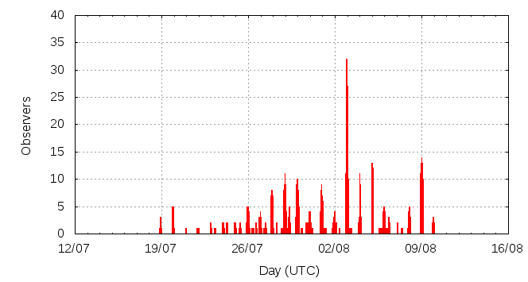

[ www.imo.net ]
This page shows automated results of the Southern delta-Aquariids 2014, based on visual observations reported by citizen scientists through the report form of the International Meteor Organization (IMO). The information on this page is generated automatically; for scientific use please refer to manual analyses published in scientific journals (such as WGN). Send your feedback regarding this page to Geert Barentsen.
Page contents:
Note that the data will finally go into the Visual Meteor Database (VMDB) with manual inspection and rectifications. We are curretly completing the files of 2008-2011. The VMDB is an enormous project - any help will be greatly appreciated.
Page generated: 2014 September 14 at 16:20 UTC.
The graph below shows the ZHR (Zenithal Hourly Rate), which is the number of meteors an observer would see under a very dark sky with the radiant of the shower in zenith.
ZHRmax = 29 based on 1105 sdaquariids reported in 507 intervals, assuming population index r = 3.0

| Time (UTC) | Solarlon | nINT | nSDA | ZHR | Particle density | |
|---|---|---|---|---|---|---|
| 2014-07-19 10:44 | 116.500 | 6 | 2 | 5 | ±3 | 31 / 109·km3 |
| 2014-07-22 11:32 | 119.395 | 4 | 7 | 9 | ±3 | 56 / 109·km3 |
| 2014-07-24 08:03 | 121.167 | 17 | 28 | 8 | ±1 | 50 / 109·km3 |
| 2014-07-25 21:12 | 122.646 | 18 | 30 | 8 | ±1 | 50 / 109·km3 |
| 2014-07-26 03:44 | 122.906 | 11 | 31 | 10 | ±2 | 62 / 109·km3 |
| 2014-07-26 22:14 | 123.643 | 7 | 30 | 12 | ±2 | 74 / 109·km3 |
| 2014-07-27 06:22 | 123.967 | 4 | 34 | 18 | ±3 | 111 / 109·km3 |
| 2014-07-27 19:03 | 124.472 | 11 | 34 | 13 | ±2 | 80 / 109·km3 |
| 2014-07-28 03:34 | 124.811 | 7 | 36 | 15 | ±2 | 93 / 109·km3 |
| 2014-07-28 22:08 | 125.551 | 7 | 32 | 25 | ±4 | 155 / 109·km3 |
| 2014-07-29 00:03 | 125.627 | 16 | 55 | 17 | ±2 | 105 / 109·km3 |
| 2014-07-29 02:46 | 125.735 | 6 | 30 | 18 | ±3 | 111 / 109·km3 |
| 2014-07-29 07:46 | 125.935 | 6 | 40 | 25 | ±4 | 155 / 109·km3 |
| 2014-07-29 19:43 | 126.411 | 12 | 31 | 15 | ±3 | 93 / 109·km3 |
| 2014-07-29 23:16 | 126.552 | 18 | 53 | 16 | ±2 | 99 / 109·km3 |
| 2014-07-30 01:20 | 126.635 | 14 | 47 | 19 | ±3 | 118 / 109·km3 |
| 2014-07-30 07:53 | 126.896 | 3 | 43 | 29 | ±4 | 179 / 109·km3 |
| 2014-07-30 21:21 | 127.433 | 9 | 34 | 16 | ±3 | 99 / 109·km3 |
| 2014-07-31 01:18 | 127.590 | 6 | 32 | 18 | ±3 | 111 / 109·km3 |
| 2014-07-31 19:22 | 128.310 | 9 | 31 | 20 | ±4 | 124 / 109·km3 |
| 2014-07-31 23:10 | 128.462 | 18 | 43 | 13 | ±2 | 80 / 109·km3 |
| 2014-08-01 09:40 | 128.880 | 18 | 40 | 8 | ±1 | 50 / 109·km3 |
| 2014-08-02 14:48 | 130.042 | 19 | 30 | 6 | ±1 | 37 / 109·km3 |
| 2014-08-02 23:26 | 130.386 | 51 | 54 | 6 | ±1 | 37 / 109·km3 |
| 2014-08-03 01:09 | 130.455 | 23 | 53 | 14 | ±2 | 87 / 109·km3 |
| 2014-08-03 23:38 | 131.351 | 13 | 31 | 14 | ±2 | 87 / 109·km3 |
| 2014-08-04 01:14 | 131.415 | 16 | 43 | 18 | ±3 | 111 / 109·km3 |
| 2014-08-05 00:34 | 132.346 | 47 | 68 | 9 | ±1 | 56 / 109·km3 |
| 2014-08-05 19:35 | 133.104 | 28 | 31 | 8 | ±1 | 50 / 109·km3 |
| 2014-08-07 10:37 | 134.662 | 18 | 10 | 2 | ±1 | 12 / 109·km3 |
| 2014-08-09 00:12 | 136.163 | 40 | 31 | 6 | ±1 | 37 / 109·km3 |
| 2014-08-09 03:38 | 136.300 | 25 | 11 | 4 | ±1 | 25 / 109·km3 |
The reported intervals are automatically added together into the bins shown above, based on the number of meteors and the distribution of the intervals. For each bin, the following parameters are computed:
Data has been received from 76 observers in 24 countries. Thank you for your efforts!
Note: click on the map for an interactive version.

| Observer | Country | Teff | nSDA |
|---|---|---|---|
| Marina Arnaut | Serbia | 3.17h | 4 |
| Dorina Balind | Hungary | 1.23h | 6 |
| Martina Birosikova | Slovakia | 0.95h | 0 |
| Chengye Cao | China | 0.40h | 1 |
| Martin Dana | Czech Republic | 2.00h | 0 |
| Jose Vicente Diaz Martinez | Spain | 1.00h | 5 |
| Jozef Drga | Slovakia | 0.75h | 2 |
| Jaroslav Drgona | Slovakia | 1.83h | 0 |
| John Drummond | New Zealand | 2h | 26 |
| Bratislav Filipovic | Serbia | 5.33h | 15 |
| William Godley | United States | 2h | 4 |
| Ljubica Grasic | Serbia | 4.27h | 14 |
| Pavol Habuda | Slovakia | 0.45h | 0 |
| Gabriel Hickel | Brazil | 2.81h | 37 |
| Yurun Huang | China | 2.48h | 8 |
| Milos Igrutinovic | Serbia | 2.33h | 6 |
| Jovana Jankov | Serbia | 7.24h | 24 |
| Csilla Kalup | Hungary | 2.09h | 7 |
| Desislava Kalaidjieva | Bulgaria | 6.72h | 24 |
| Dusanka Kovacevic | Serbia | 4.42h | 17 |
| Samuel Koys | Slovakia | 1.57h | 3 |
| Pete Kozich | United States | 0.70h | 6 |
| Juraj Kubica | Slovakia | 1.59h | 3 |
| Irina Kurteva | Bulgaria | 6.77h | 4 |
| Maciej Kwinta | Poland | 4.67h | 7 |
| Martin Labudik | Slovakia | 2.00h | 0 |
| Caslav Lukic | Serbia | 1.90h | 2 |
| Ema Lupsic | Serbia | 7.66h | 19 |
| Boris Majic | Serbia | 5.54h | 27 |
| Ivana Majranovic | Serbia | 2.00h | 9 |
| Aleksei Makarow | Russia | 1.00h | 3 |
| Daniel Marek | Czech Republic | 2.00h | 0 |
| Nikoleta Martinakova | Slovakia | 1.78h | 0 |
| Bruce Mccurdy | Canada | 3.5h | 7 |
| Artem Mirgorod | Ukraine | 0.75h | 1 |
| Vladimir Obradovic | Serbia | 3.5h | 8 |
| Aleksa Pantic | Serbia | 1.68h | 2 |
| Ina Rendtel | Germany | 10.22h | 31 |
| Martin Sallai | Hungary | 1.60h | 6 |
| Jazmin Sikar | Hungary | 1.52h | 4 |
| Ivan Stankovic | Serbia | 11.65h | 66 |
| Ilian Stefchov | Bulgaria | 1.93h | 2 |
| Stefani Stefanova | Bulgaria | 5.18h | 3 |
| Wesley Stone | United States | 2.56h | 18 |
| Fengwu Sun | China | 0.83h | 1 |
| Matej Sustr | Slovakia | 0.72h | 2 |
| Kitti Szabo | Hungary | 0.98h | 5 |
| Thomas Weiland | Austria | 40.26h | 242 |
| Maciek Myszkiewicz | Poland | 39.85h | 48 |
| Terrence Ross | United States | 24.71h | 153 |
| Pierre Bader | Germany | 4.95h | 5 |
| Konstantin Morozov | Belarus | 5.5h | 10 |
| Stefan Schmeissner | Germany | 17.45h | 22 |
| Pierre Martin | Canada | 9.84h | 46 |
| Jurgen Rendtel | Germany | 10.19h | 10 |
| Anna Levina | Israel | 6.85h | 32 |
| Javor Kac | Slovenia | 13.23h | 24 |
| Branisla Savic | Serbia | 2.21h | 12 |
| Koen Miskotte | Netherlands | 11.99h | 14 |
| Alexsandr Morozov | Russia | 2.01h | 9 |
| Christoph Gerber | Germany | 7.02h | 3 |
| Branislav Savic | Serbia | 11.69h | 35 |
| Dunja Pavlovic | Serbia | 3.99h | 10 |
| Debora Pavela | Serbia | 3.50h | 4 |
| Alexandr Maidik | Ukraine | 16h | 37 |
| Alexandr Maidik Maidik | Ukraine | 1.00h | 3 |
| Mitja Govedic | Slovenia | 2.85h | 5 |
| Dusan Pavlovic | Serbia | 0.47h | 1 |
| Snezana Todorovic | Serbia | 7.92h | 13 |
| Oliver Toskovic | Serbia | 2.50h | 7 |
| Mate Toth | Hungary | 1.68h | 3 |
| Shigeo Uchiyama | Japan | 3.83h | 17 |
| Nikola Vlajnic | Serbia | 10.55h | 19 |
| Radim Volek | Czech Republic | 2.00h | 0 |
| Frank Waechter | Germany | 1.03h | 1 |
| Sabine Waechter | Germany | 1.08h | 3 |
| Adam Weinhardt - Kovacs | Hungary | 1.68h | 5 |
| Oliver Wusk | Germany | 1.50h | 2 |
| Yulia Yancheva | Bulgaria | 3.50h | 4 |
| Igor Zahornacky | Slovakia | 1.72h | 1 |
| Matej Zahornacky | Slovakia | 1.00h | 1 |
| Paul Zeller | United States | 3.81h | 2 |
| Miroslav Zivanovic | Serbia | 12.56h | 32 |
Create your own analysis. The files below can be opened using Excel:
sda2014_rate.csv (number of meteors per interval per observer)
sda2014_magn.csv (number of meteors per magnitude bin per observer)
The information on this page may be distributed freely provided credit is given to the International Meteor Organization (IMO) and, when possible, to the individual observers. The computer facilities to generate this page are provided by ESA/RSSD and Armagh Observatory.
References: